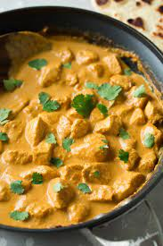

Slow Cooker Chicken Curry

Description
Truly, a one of a kind recipe that has been passed down from the ancient Indians. It is mentioned that the ancient Indians would eat this before their festivals.
Ingredients
- 3 pounds skinless, boneless chicken breast
- 2 cans cocunut milk
- 2 onions, diced
- 4 tablespoons tomato paste
- 4 tablespoons minced fresh garlic
- 4 tablespoons minced fresh ginger
- 1 tablespoon ground cumin
- 1 tablespoon ground for each masala, tumeric, ground coriander, and curry powder
- 4 bay leaves
- 1 cinnamon stick
Steps
- Mix sour cream, lemon juice, and dill together in a bowl. Add cucumbers and onion; stir to combine. Season with salt and black pepper.
- Cook on High until chicken is no longer pink in the center and the juices run clear, 2 to 3 hours. An instant-read thermometer inserted into the center should read at least 165 degrees F (74 degrees C). Remove and discard the bay leaves and cinnamon stick. Shred the chicken.